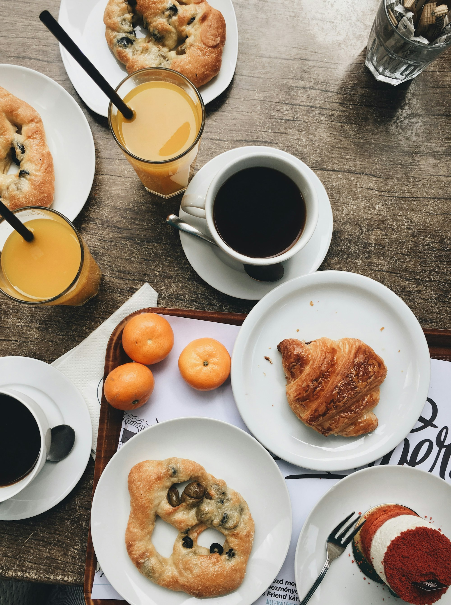
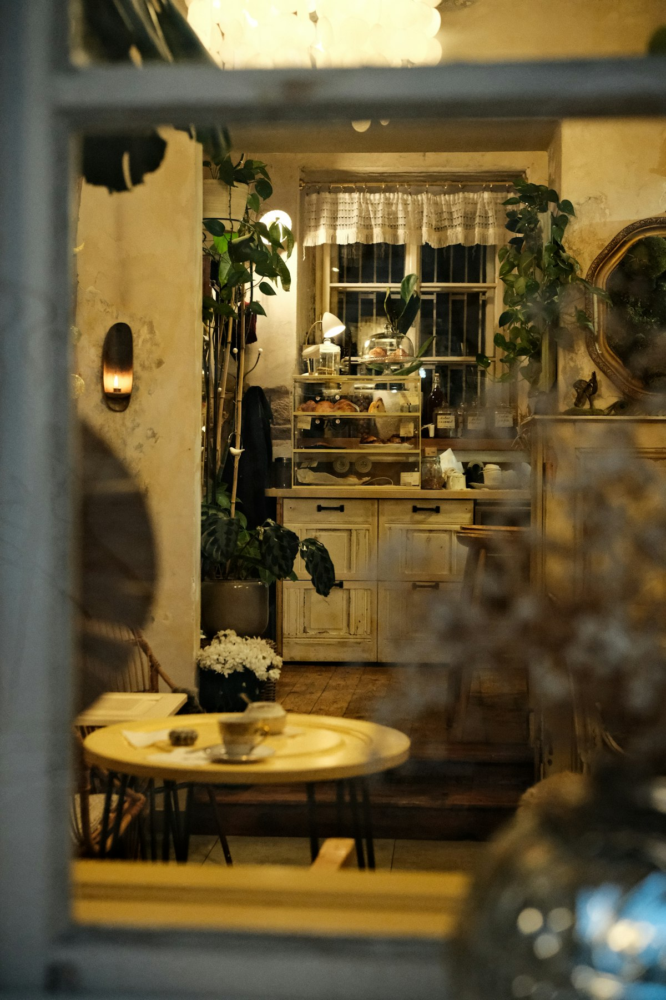
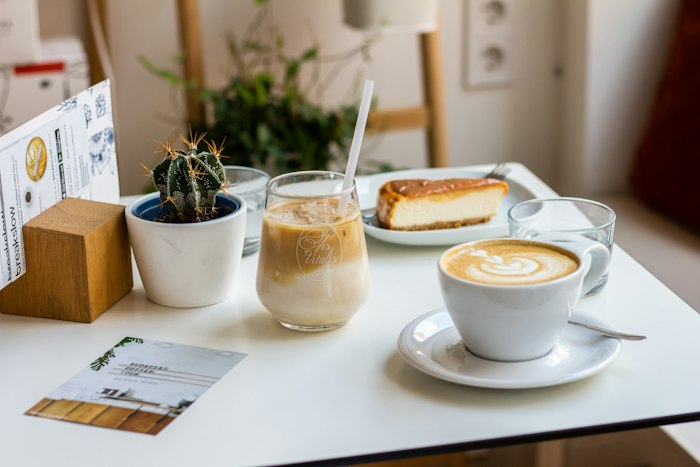
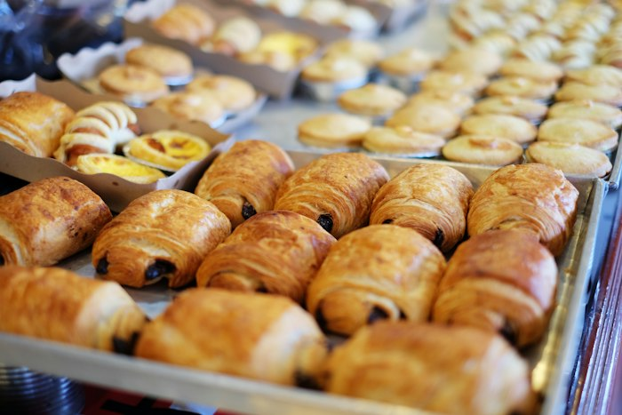
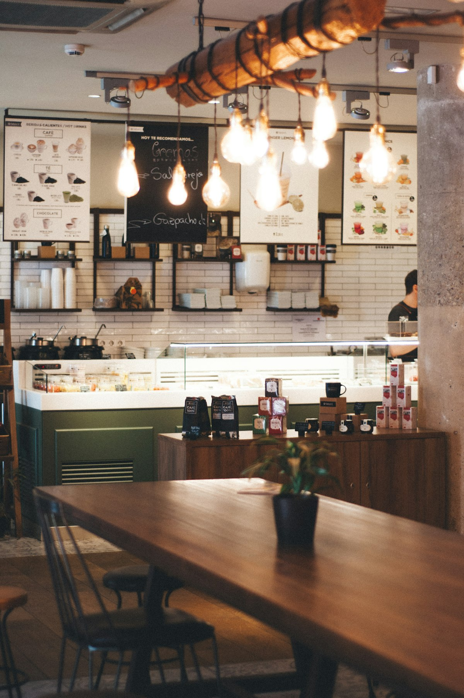
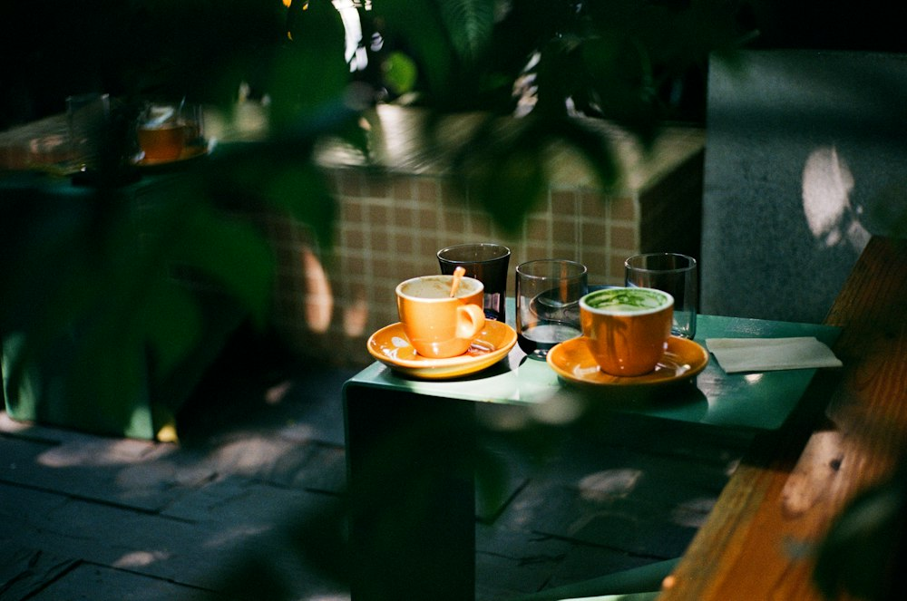
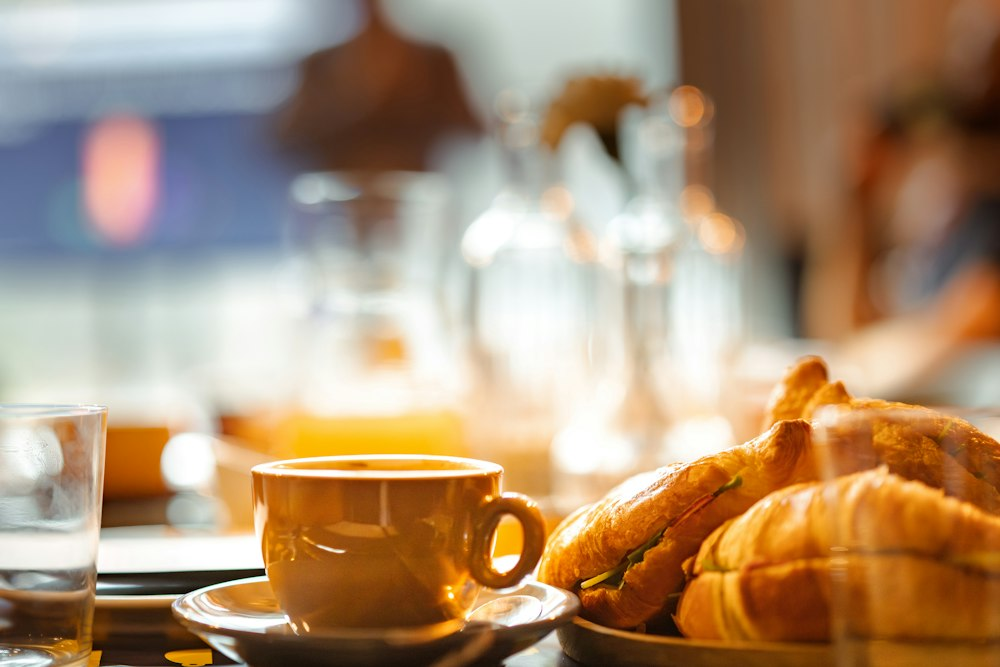
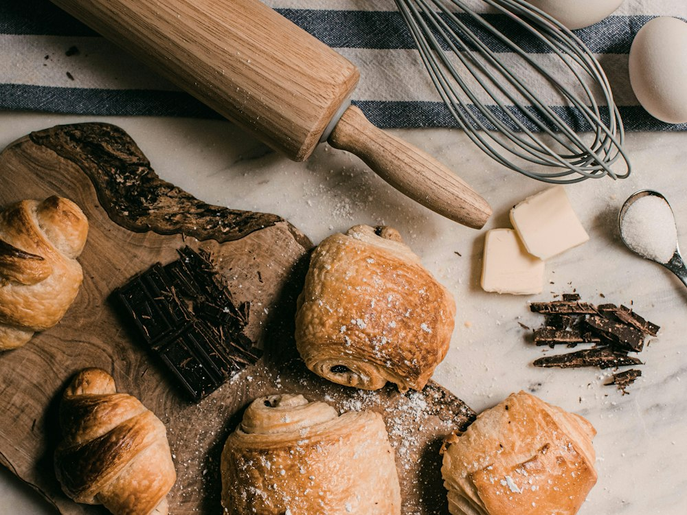
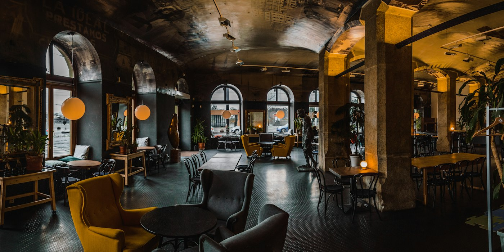

Selbst gerösteter Kaffee, Kuchen vom Morgen und Frühstück bis 14 Uhr. Am Marktplatz, seit 2014.
Kein Pappbecher, kein Stress. Nur gute Sachen und Zeit, so wie ein Morgen sein sollte.

Unser GastraumFair gehandelte Bohnen, geröstet in unserem Laden. Das riechst du schon an der Tür.

Flat White
Jeden Morgen frisch
Die ThekeAlles hausgemacht und so regional wie möglich. Vegan? Frag einfach, fast alles geht.



Zur Seite wischen für mehr. (Beispiel-Bewertungen, das Café ist erfunden.)
„Der beste Flat White, den ich je hatte. Und alle sind so herzlich.“
Lena · Stammgast„Unser Sonntags-Ritual. Unbedingt vorher reservieren!“
Familie K.„Ruhig, gemütlich, der Käsekuchen ist ein Traum.“
Tom„Endlich ein Café, in dem man einfach sitzen bleiben darf.“
Sarah
📍 Marktplatz 1 · 12345 Musterstadt